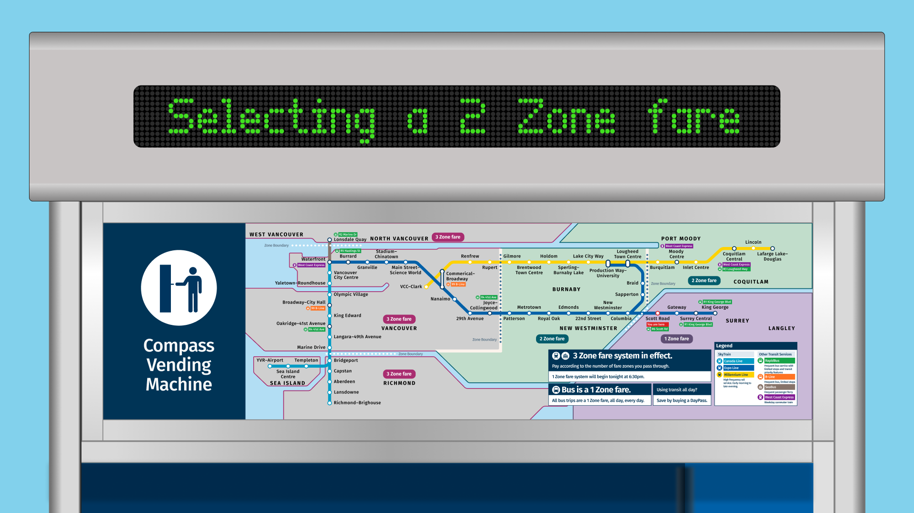
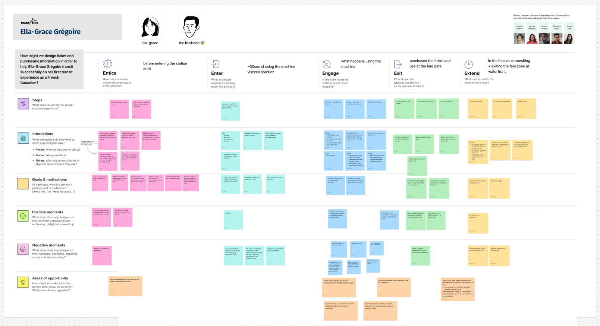
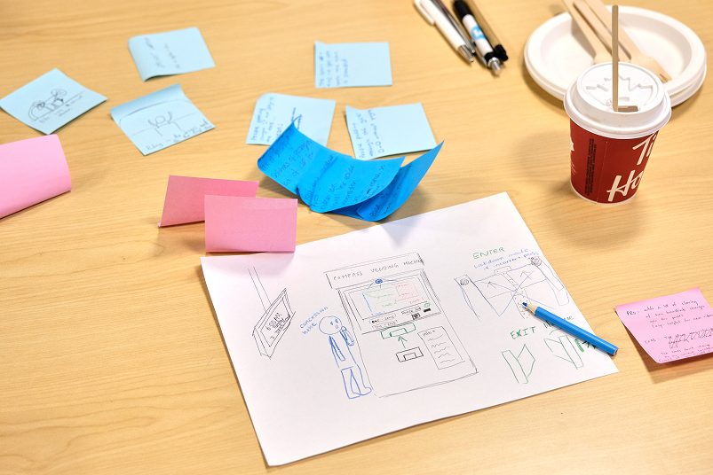
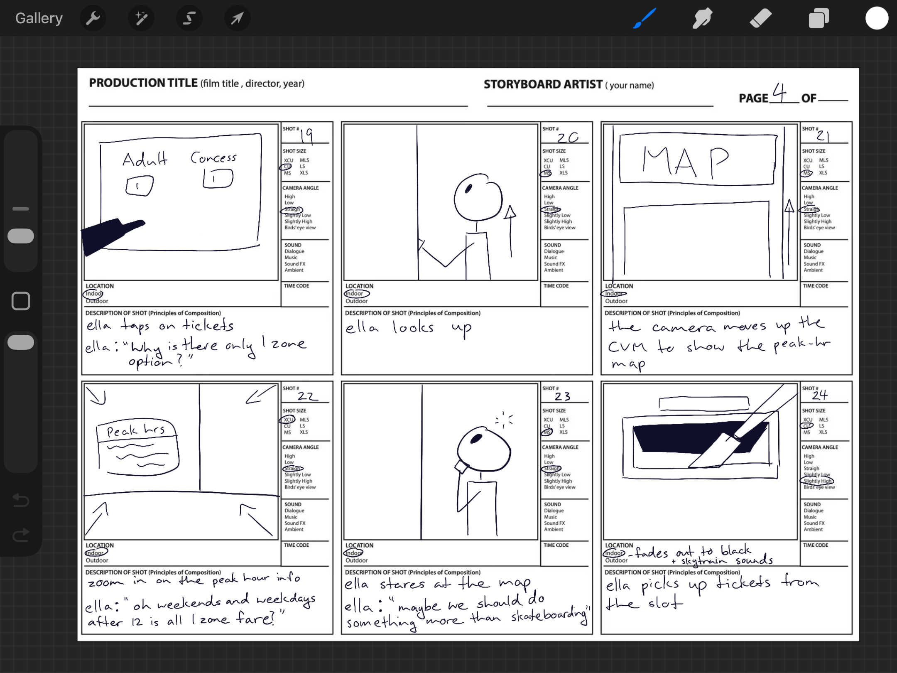
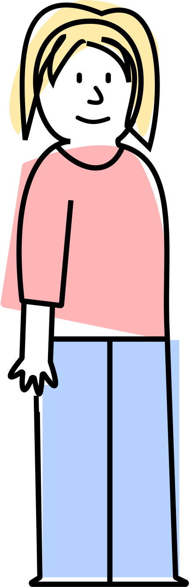
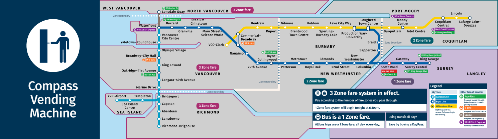
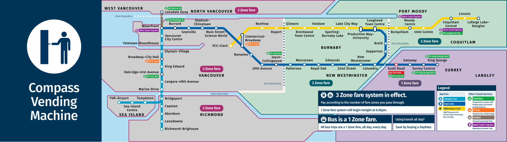
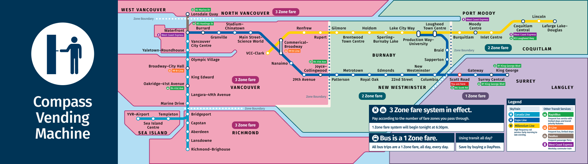
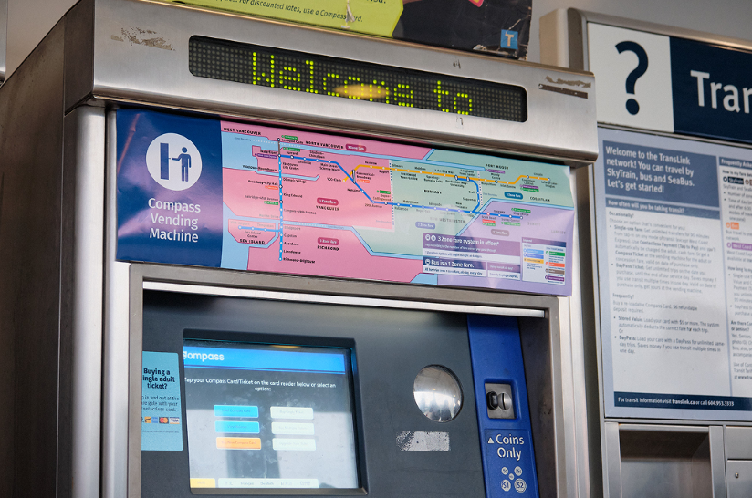

ux design
Interactive
Zone Map
TransLink’s current Compass Vending Machines (CVMs) rely on static zone maps that contribute to high cognitive load for infrequent riders. This project introduced a dynamic, responsive zone map to automate fare logic and provide real-time visual clarity.
the Problem
Low-frequency riders and tourists often struggle to determine fare differences and the zones they are traveling within.
the Objective
How might we illustrate the zone-based pricing structure at the Compass Vending Machine—in accordance to TransLink’s constraints—to reduce low-frequency transit users’ cognitive load when deciding the fare coverage they need to get to their destination.

My Roles
01.
Visuals Designer
I designed posters using the brand style
for personas, user journey, idea iterations, and workshop summary.
02.
UX Researcher
I conducted primary and secondary user
research through online ethnography, short surveys, and collaborative workshops.
03.
Storyteller
I ideated and edited 2 short films to display
the final design through action.
the Process
survey sampling

Conducted field research at Metrotown Station, surveying 10 users interacting with CVMs. We identified that users frequently looked back and forth between the screen and static map, causing "navigation loops." A persona was created from this research.
participatory design workshops

I facilitated two co-creation sessions where participants sketched their "ideal" purchasing flow. This revealed a desire for spatial confirmation—users wanted to see a visual representation of their destination before paying.
user journey

As the Lead for the User Journey Film, I directed and edited a narrative demonstration to bridge the gap between wireframes and real-world application. The film illustrates the new experience, specifically highlighting the reduction in decision time for a confused passenger.
the Challenges
The TransLink team has asked for a solution that improves the experience without requiring major hardware alterations to existing CVMs.

the Solutions
A responsive zone map that replaces static maps through a small screen.
- Fare Logic: The system detects the current time/date and station location to render applicable zones.
- Connected Interaction: Users continue actions on the CVM screen to see changes in the map screen above.
the Outcomes
An interactive Skytrain fare map based on TransLink's zone pricing. The zones change in color based on user's location, ticket selection, and time of purchase.

Selecting 1 Zone at Scott Road Station

Selecting 2 Zones

Selecting 3 Zones

How the map would look on a CVM
the Takeaways
While the current solution successfully addresses zone confusion, if there were more time, I would:
- Tourism: conduct usability testing at YVR Airport to evaluate how non-English speakers and international tourists navigate the interface.
- Sustainability: I am interested in exploring how the interface could nudge users toward digital Compass cards or mobile payments to reduce the environmental impact of single-use paper tickets.
This project taught me the importance of stepping out of the studio and onto the streets to see the real interactions that happen around the issue.